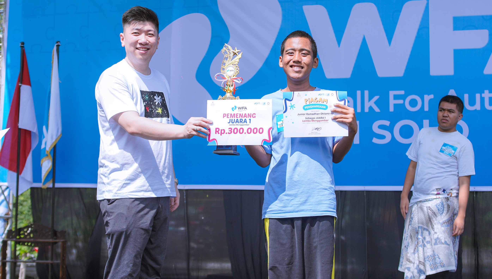

Organisasi ini dipimpin oleh pengurus inti yang terdiri dari ketua,
sekretaris, bendahara, serta beberapa bidang yang menangani program, kegiatan
sosial, media, dan edukasi. Di setiap kota dan kabupaten, ada koordinator
wilayah (korwil) yang siap membantu anggota di daerah masing-masing.
PIK POTADS Jawa Tengah tumbuh dengan nilai-nilai keluarga:
Untuk mencapai visi tersebut, kami PIK
POTADS Jawa Tengah selalu terbuka bagi siapa saja yang ingin bergabung, baik
sebagai anggota keluarga, relawan, maupun sahabat komunitas. Setiap langkah
kecil bersama akan membawa perubahan besar untuk masa depan anak-anak Down
Syndrome dan keluarganya.